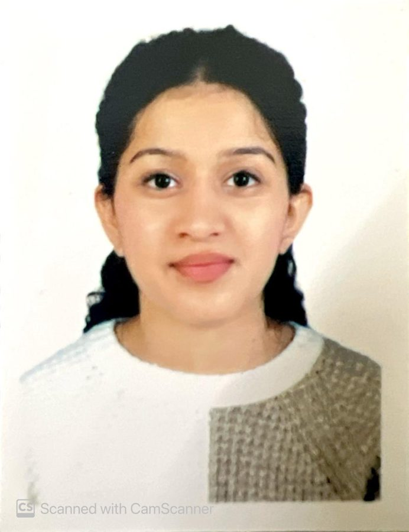
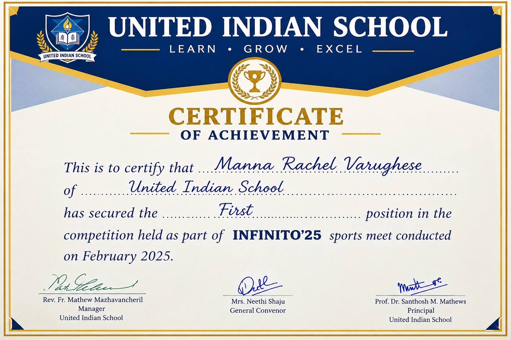
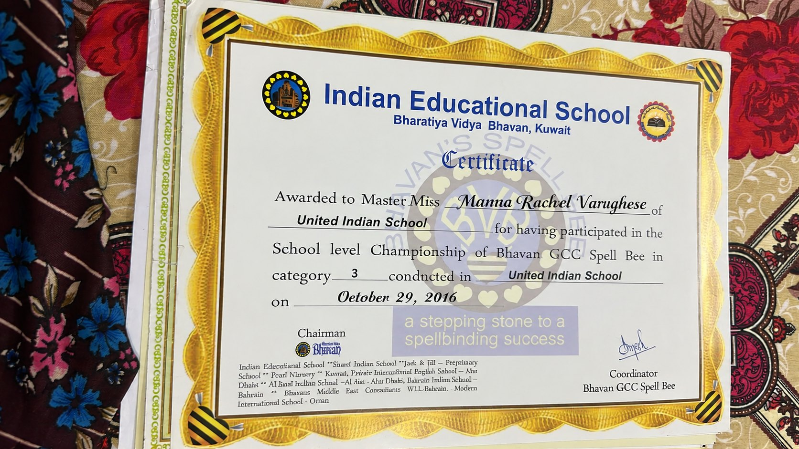

Programming
Developing programming knowledge through introductory coding and practice.
Programming BasicsCoding Exercises
A student at Vellore Institute of Technology, exploring computer science, building technical skills, and learning through academic projects and new experiences.

B.Tech · CSE Core · VIT
I'm at the beginning of my journey in computer science, focused on learning, improving, and making the most of every opportunity.
I want to learn new concepts, develop technical and professional skills, and gain practical experience while supporting academic growth, teamwork, and career development.
I enjoy exploring new concepts and strengthening my understanding through coding exercises, mathematical problems, and academic assignments. I value collaboration, adaptability, and a willingness to keep learning.
This portfolio brings together my education, developing technical skills, academic work, and the soft skills I aim to bring to future opportunities.
Building a foundation in computer science and engineering.
Bachelor of Technology (B.Tech) · Computer Science and Engineering (CSE Core)
Core technical areas and tools from my current learning journey.
Developing programming knowledge through introductory coding and practice.
Using relevant software tools for academic and computational work.
Building a foundation in core computer concepts.
Practicing logical and computational approaches to academic problems.
Approaching new topics with curiosity and a focus on understanding.
Open to feedback, new ideas, and opportunities to improve.
Note: Specific programming languages and tools can be updated as your experience grows.
Early academic practice that helps me connect concepts with computational problem-solving.
Practiced programming and computational problem-solving through academic assignments, coding exercises, and mathematical problems using relevant software tools.
Continuing to develop technical and professional skills through coursework, practice, and exploration of new concepts.
An ongoing exploratory project examining how consistently everyday AI tools provide useful and accurate responses. The project compares outputs across common tasks, checks claims against trustworthy references where possible, and notes limitations such as errors, bias, and context sensitivity.
Early-stage ideas I would like to explore through research, design, and prototyping. These are proposed concepts, not completed products or granted patents.
A proposed assistant that adapts digital content presentation to a user’s accessibility preferences and current task—for example, by offering clearer layouts, simplified navigation, or alternative ways to interact. The goal is to make digital experiences more usable across different needs.
A proposed debugging aid for learners that uses error messages, code context, and targeted test cases to help distinguish likely causes of a programming error and explain practical next steps. The aim is to support understanding rather than simply provide a replacement solution.
A proposed approach for verifying selected student credentials or eligibility without unnecessarily exposing a person’s full academic record or personal information. Further research would explore secure verification, data minimisation, and practical implementation.
Recognising teamwork and achievement at United Indian School.

United Indian School · Horizon 2024 · February 2025.

United Indian School · INFINITO’25 · February 2025.

Indian Educational School, Bharatiya Vidya Bhavan, Kuwait · October 29, 2016 · Category 3.
Academic and extracurricular experiences that helped me build confidence, language skills, and a spirit of learning.

School-level championship participation certificate · United Indian School · October 29, 2016.
Knowledge and teamwork
Took part in a quiz competition to demonstrate general knowledge, teamwork, and quick thinking.
Creativity and innovation
Presented or explored scientific concepts through hands-on learning and creative projects.
Creative expression
Participated in creative activities that encouraged imagination and artistic expression.
Add or edit these entries to match the events and activities you actually participated in.
Internship roles I am interested in pursuing while building my computer science foundation. These are target roles, not internships already completed.
Build simple, responsive websites and portfolio pages using HTML, CSS, and JavaScript; improve accessibility and mobile layouts.
Create small scripts to organize files, process spreadsheets, or automate repetitive tasks, with clear documentation and testing.
Help test websites or apps, write clear bug reports, check user flows, and learn basic test-case design.
Support user research, wireframes, usability feedback, or beginner-friendly research tasks for student teams and small organizations.
Next step: choose one area, complete 1–2 small projects, publish them in a portfolio or GitHub, and apply to beginner-friendly opportunities, campus projects, and nonprofit or student teams.
People skills and habits I value in academic and collaborative settings.
I'm looking forward to learning, collaborating, and exploring opportunities that support my academic and career growth.